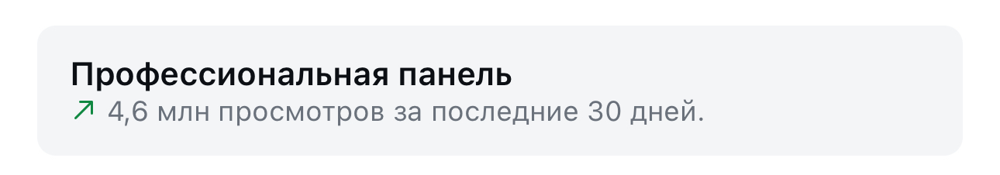

Две самые умные модели в одной связке: одна пишет, другая проверяет
claudex-loop - бесплатный открытый скилл для Claude Code и Codex. План и код проходят через вторую модель до того, как ты их примешь
Что это и зачем
Обычно одна и та же модель пишет код и сама же его проверяет. Свои ошибки она видит плохо, как и человек
claudex-loop разводит роли между двумя разными моделями. Ты работаешь в Claude Code как обычно, а план перед стартом читает Codex и возвращает замечания с доказательствами. Claude правит план, Codex смотрит снова, и так до вердикта APPROVED. Потом код пишет один, а финальную проверку делает другой, в свежей сессии
Главное правило скилла: кто писал код, тот его не принимает
В README репозитория прямо названы модели Claude Fable 5.1 и GPT-6 Astra, если они доступны на твоих аккаунтах. Если нет, каждая программа работает на той модели, что у тебя уже стоит
Шаг 0. Что нужно до старта
Для полной связки нужны обе программы, установленные и с выполненным входом: Claude Code и Codex. Плюс Python версии 3.10 или новее. Отдельные ключи API не нужны
Куда нажать. Открой терминал (окно, где команды печатаются текстом) и вставь строки по очереди:
claude --version claude auth status codex --version codex login statusЧто увидишь. Номера версий и подтверждение, что вход выполнен. Если пишет «command not found» или что вход не выполнен, сначала поставь эту программу и войди в неё
Что это даёт. Без второй программы проверять будет некому, и связка не запустится
Поставь плагин в Claude Code
Куда нажать. В поле чата Claude Code вставь две строки по очереди:
/plugin marketplace add chaseai-yt/claudex-loop /plugin install claudex-loop@claudex-loopЧто увидишь. Первая строка подключает репозиторий как магазин плагинов, вторая ставит сам плагин
Что это даёт. Все скиллы связки встают в Claude Code, руками ничего копировать не нужно
Дай задачу через claudex
Куда нажать. Открой новый диалог и напиши свою задачу вот так:
claudex this feature - plan and implement itЧто увидишь. Claude сначала разберёт код и задаст вопросы по развилкам, потом напишет PLAN.md и отдаст его Codex на ревью. Все замечания и решения складываются в PLAN-REVIEW-LOG.md
Что это даёт. Ошибки в плане ловятся до того, как написана первая строка кода, а не после
Схема как в ролике: GPT пишет, Claude проверяет
Куда нажать. По умолчанию код пишет та программа, в которой ты сидишь. Чтобы строил Codex, добавь параметр:
claudex this feature, builder=codex, reviewer_model=gpt-6-astraЧто увидишь. План ревьюит GPT-6 Astra, код пишет Codex, а финальную проверку делает Claude в отдельной сессии
Что это даёт. Модели меняются ролями: та, что строила, не оценивает свою работу
Нужен только совет, без полного цикла
Куда нажать. В том же репозитории есть лёгкий скилл-маршрутизатор:
/claudex-loop:claudex-routeЧто увидишь. Рекомендацию, какой модели отдать задачу и почему: остаться на текущей, взять второе мнение или передать кусок работы
Что это даёт. Второе мнение на маленькой задаче без запуска всей связки
Если что-то не встало
- Связка не стартует - проверь вход в обе программы:
claude auth statusиcodex login status - Ругается на Python - проверь версию:
python3 --version, нужна 3.10 или новее - Codex собирает код в папке с несохранёнными изменениями - скилл требует чистое состояние проекта перед сборкой: сначала сохрани (закоммить) свою работу
Где смотреть подробности
github.com/chaseai-yt/claudex-loop- сам репозиторий: README, все параметры, ограничения доступа для каждой модели
Скилл сейчас бесплатный
Открытый код, лицензия MIT. Платишь только по своим обычным подпискам Claude и ChatGPT, на которых работают обе программы
Что происходит с блогом, пока я собираю такие инструкции
Пишу про такие находки регулярно, и вот что это даёт блогу на нейросетях за то же время



Три рилса по миллиону и больше. Без рекламы и без команды: производство занимает минуты, время уходит на смысл
Готовый скилл - это чужая логика работы
Я одна, в декрете, без команды разработки строю системы на нейросетях сама. claudex-loop - сильная находка, но это один кирпич. Какие задачи отдавать второй модели, где ей вообще не место и как это встроить в твою ежедневную работу, за тебя никто не решит
Поставить скилл - десять минут. Собрать свою систему под то, чем ты занимаешься каждый день, - другая работа, и начинается она с разбора твоих задач
На консультации разбираю, как выстроить такую систему у тебя
Напиши слово
мне в личку Telegram
НаписатьМои каналы и страницы